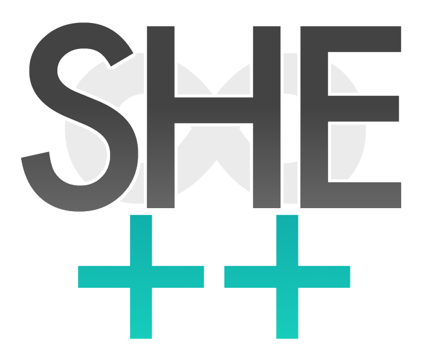

As technology's impact on society continues to grow, a greater need for females in tech arises.
With only 20-25% of computer and mathematical sciences fields being occupied by women
it is important that young girls are exposed to coding and computer science at a young age to peak their interests.
Down below lists a few programs that have been known to provide young girls with an encouraging environment that induce interests in technology.
Girls Who Code Summer Youth Immersion Program:
Girls Who Code Summer Youth Immersion Program (GWC SIP) is a 7 week free summer course aimed to introoduce young girls to the many areas in technology from robotics to web development.
This program is a national program with it's opportunities in cities such as Chicago and Dallas.
If applicable a student can also apply for a summer stipend ranging from $250 to $1000. Link to GWC SIP website can be found here.
Platforms For Women:
Platforms for Women inspires the next generation of females into Science, Technology, Engineering and Maths(STEM) fields
by showing them the amazing women already in STEM via a series of
panel events, hackathons, exhibitions, and mentoring schemes. Link to Platforms For Women website can be found here
She Plus Plus:

SHE++ is a non-profit organization that empowers young girls to make their mark in technology by teaching them the basics in technology as well as their own personal importance in society and STEM fields. Link to She Plus Plus website can be found here